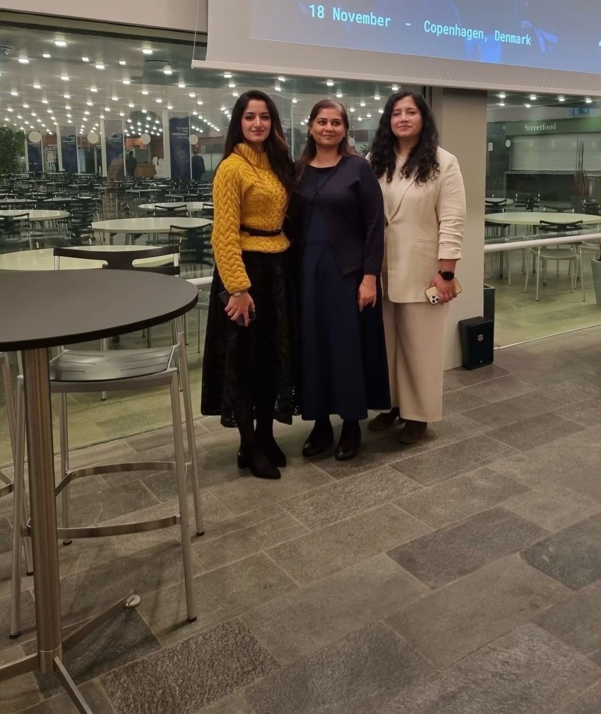
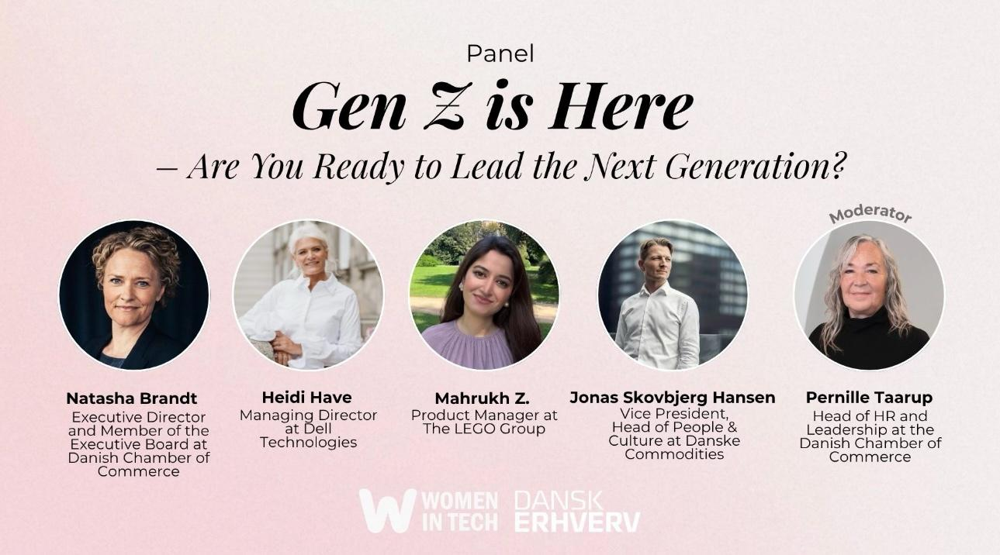
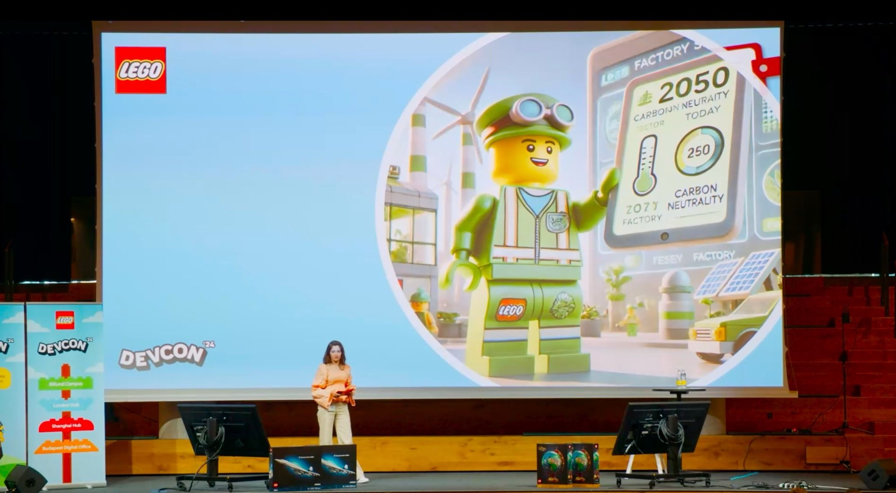

I'm Mahrukh, a Technical Product Manager who owns data and AI products from discovery to launch, based in Copenhagen.
I start from how people actually work, prototype an idea myself before it costs engineering time, and use my data engineering background to spot early when a plan won't hold. I get business, engineering and data owners behind one problem, use AI where it earns its place, and write down why we decided, so the team can move without waiting for me.

Experience
-
2026Jan 2026 onwards
Product Manager
The LEGO Group, Billund
- Led cross-functional delivery of a global investment-planning platform with a team of eight data engineers and Deloitte consultants.
- Replaced a fragmented, multi-source planning process with one automated platform, adopted by 2,500+ users across LEGO's global markets.
- Ran discovery and feedback sessions that reprioritised 5 of 10 initial roadmap initiatives, avoiding an estimated 300 hours of misdirected engineering work.
- Negotiated scope and pricing with Deloitte, cutting the proposed contract cost by 25% and the timeline by six weeks.
-
2023 to 2025Jul 2023 to Dec 2025
Data Engineer
The LEGO Group, Billund
De facto Product Manager for my own initiatives from January 2024.
- Scoped and shipped LEGO's internal AI assistant (retrieval-augmented) end to end, validated at 85% answer accuracy before rollout and cutting repeated onboarding questions by 40%.
- Led delivery of ELT pipelines and data models on AWS, Azure and Databricks for an ESG and energy-reporting platform, cutting pipeline failures by 34%.
- Led pipeline delivery for an HR analytics platform, cutting report turnaround from two weeks to two days.
-
2022 to 2023Oct 2022 to May 2023
Junior Product Owner (part-time)
Admiral, Cardiff
- Turned 20+ customer interviews into five roadmap initiatives for the digital customer experience squad.
- Prioritised the backlog and delivered 8+ product enhancements that improved quote conversion by 6%.
-
2022Jun to Sep 2022
Data Engineering Intern
IBM, London
- Worked on a telemetry data platform used by 700+ engineers, building automation with IBM Cloud Functions and GitHub Actions and Python ingestion from REST APIs.
-
2021Jun to Aug 2021
Digital Transformation Intern
Alstom, Copenhagen
- Automated maintenance KPI reporting across Nordic sites with Python, SQL and Azure Functions.
Education
-
2023Graduated
BSc Applied Software Engineering
Cardiff University, UK
- Also studied cybersecurity and penetration testing.
-
2019Graduated
International Baccalaureate (IB) Diploma
EUC Syd, Sønderborg, Denmark
Certifications
- Professional Scrum Product Owner I (PSPO I)Scrum.org, July 2026
- SQL for Data EngineeringLinkedIn Learning, December 2025
- Generative AI: Working with Large Language ModelsLinkedIn Learning
- Learning Microsoft FabricLinkedIn Learning


Projects
Products I build in the open, from problem to shipped product, with the decisions written down.
When should I charge my EV tonight?
An AI agent on Energinet's open data. I kept every number out of the model, then narrowed the target user when research and the first live run pushed back.
LiveRead case studyAn agentic job-search pipeline for the Danish market
An extension to the open-source career-ops tool. It finds Danish job listings, scores each one against my CV, prepares a tailored CV and cover letter, and has a browser agent fill in the application form. The agent can't press submit, so a person reviews every application before it's sent.
In useRead case study
Earlier work
A data engineering background behind the product work
Selected engineering projects from my data and software engineering years.
View engineering archiveWorkshops & conferences
Women in Tech panel
PanelPanelist
Panelist on the Women in Tech panel, and I led the coordination of the panel at the NordPak Foundation's invitation. I shared how I went from not knowing how to code to becoming a Product Manager at The LEGO Group, including the rejections along the way.
The Autonomy Ladder: how much freedom should you give an AI agent?
WorkshopWorkshop hostI designed and ran a hands-on workshop for product, design and engineering professionals. No laptops: teams pressure-tested real agent designs against four questions.
- What's the cost of this agent being wrong?
- Is the action reversible?
- Where does a human need to stay in the loop?
- Can your guardrails actually hold?
50+participants75 minhands-onGen Z is here: are you ready to lead the next generation?
PanelPanelist
Panelist at the Women in Tech Denmark Diversity Lounge, in a conversation hosted with Dansk Erhverv, alongside speakers from Dansk Erhverv, Dell Technologies and Danske Commodities. I brought the perspective from inside the generation being discussed.
Connecting Factory Meters to the Cloud
TalkHost and speaker
Hosted the LEGO Group's internal developer conference as DevCon Pilot, for 1,000+ colleagues across Billund, London, Copenhagen and Budapest, and gave my first conference talk: the technical challenges and architecture behind connecting utility meters at the LEGO factory in Jiaxing to the cloud.